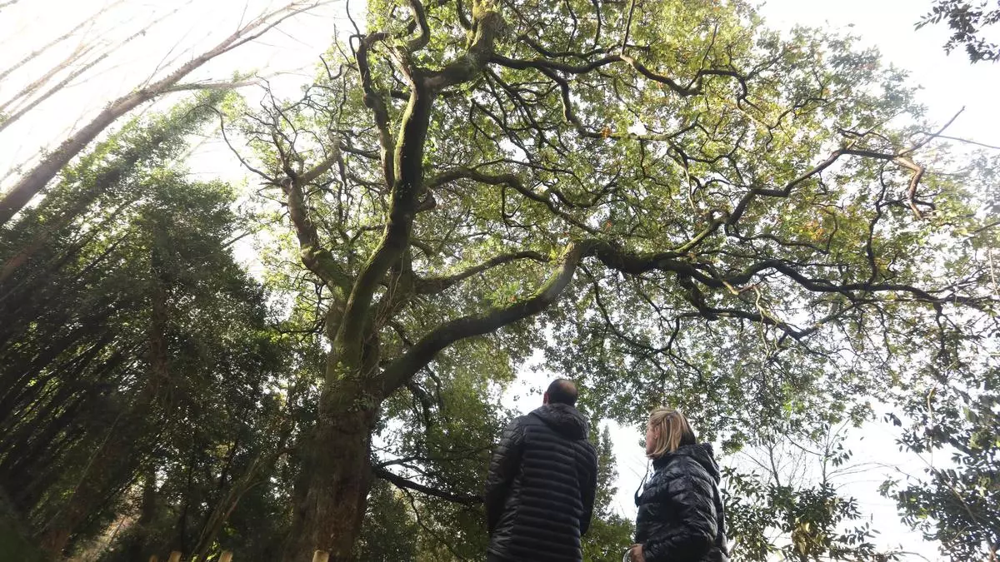
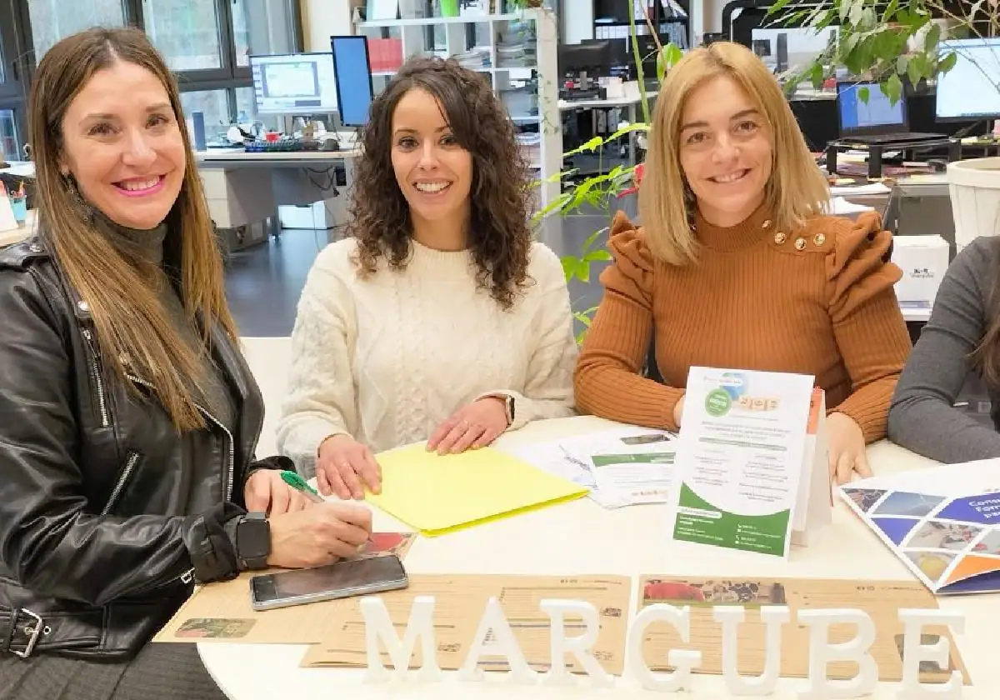
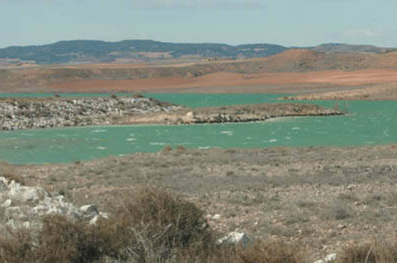

NOTICIAS
Normas europeas que salvan vidas

Los Gobiernos de los 27 países de la UE y los representantes del Parlamento europeo han cerrado esta semana un importante pacto que puede ser determinante para mejorar la salud de los 446 millones de ciudadanos comunitarios
Los trabajos para restaurar el ecosistema fluvial del Sar en Conxo arrancan en marzo
Los Gobiernos de los 27 países de la UE y los representantes del Parlamento europeo han cerrado esta semana un importante pacto que puede ser determinante para mejorar la salud de los 446 millones de ciudadanos comunitarios
Las empresas necesitan expertos en medio ambiente
El Ayuntamiento de Eibar, en colaboración con la consultoría y Formación Margube, organiza para el próximo jueves 29 de febrero un encuentro que llevará por título 'La sostenibilidad como factor de competitividad de las pymes eibarreses. Casos prácticos y oportunidades
Cinco humedales de Soria de gran belleza
La provincia de Soria cuenta con una treintena de zonas húmedas de interés especial, así recogido en el catálogo elaborado por la Consejería de Medio Ambiente de la Junta de Castilla y León.